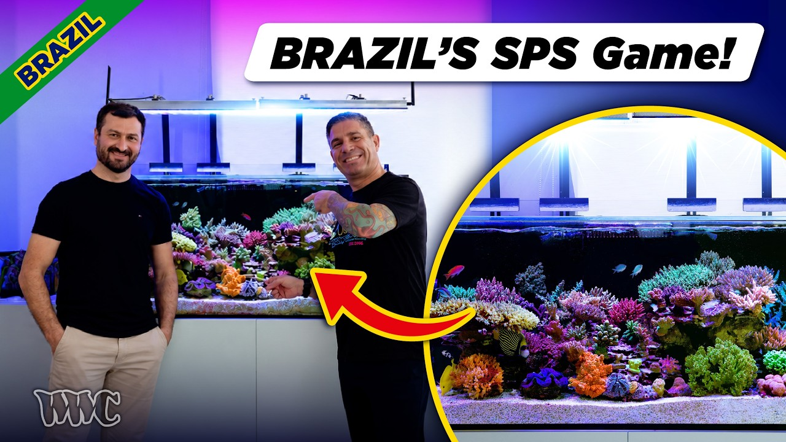

Friday, October 2, 2026 · 40 items · back issues
Howdy, it's Isaac again.
Happy Friday, reefing family, and welcome back to my Weekly Dive.
A lot landed this week.
Here are the biggest things worth knowing:
- Climate-mediated population declines in the common Floridian coral, Porites astreoides
- Markers of resilience to stony coral tissue loss disease and putative probiotic functions in the microbiomes of the coral, Orbicella faveolata
- The National Oceanic and Atmospheric Administration is asking for public comment on a plan that would allow…
- Casting a shadow: in situ shading of corals reduces hyperthermal paling
- Plus 36 more across husbandry & science, wild reefs, community
Let's dive into the news touching our hobby…
Community5
-
Reef Factory Is Back: Gian Luca Ciotti Takes 100% Ownership
Gian Luca Ciotti has acquired 100% ownership of Reef Factory after bankruptcy and plans to relaunch the brand. A major Polish aquarium-tech company's return signals market consolidation and renewed product development.
Ownership Reefs.com · danireef · Sep 29 · reefs.com
-
BRS Frags-Giving Offer!
Boston Reefers Society's FragsGiving 2026 runs November 7th with coral vendors, dry goods, educators, and raffles. A regional swap worth attending if you're in range.
Reefs.com · xeniaforever · Sep 28 · reefs.com
-
Reefapalooza California 2026 WALKTHROUGH - New Corals, New Gear & More! | Hilary On Location
Reefapalooza California 2026 floor walkthrough shows new coral displays and equipment. Event coverage offers a sense of market trends and new product availability.
7 min SaltwaterAquarium.com · SaltwaterAquarium · Sep 26 · youtube.com
-
MOAI Review: Does This Robotic Aquarium Glass Cleaner Really Work?
MOAI is a robotic glass cleaner reviewed after years of development and prototyping. A niche convenience tool with no impact on livestock health or water chemistry.
Reefs.com · danireef · Oct 1 · reefs.com
-
The State of Marine Aquarium Education - Reef Beef Chunks
Reef Beef podcast episode discusses where aquarists find education in marine keeping. A meta-discussion about community resources rather than substantive husbandry or news.
17 min Reef Beef · Reef Beef Podcast · Sep 27 · youtube.com
Industry & Products1
-
The Science of Particulate PO4, Rock Marinating, and Heavy Metal Resets: Inside Tropic Marin’s Interzoo Breakthroughs
Tropic Marin unveiled product advances in phosphate chemistry, rock treatment, and heavy-metal management at Interzoo. These directly address persistent water-quality challenges in reef tanks.
Product Reef Builders · Shawn Hale · Sep 27 · reefbuilders.com
Husbandry & Science8
-
Markers of resilience to stony coral tissue loss disease and putative probiotic functions in the microbiomes of the coral, Orbicella faveolata
Researchers identified bacterial markers associated with resistance to stony coral tissue loss disease in Orbicella faveolata, suggesting microbial communities may hold keys to SCTLD prevention. This points toward probiotic interventions for one of the Caribbean's most devastating coral diseases.
ISME Communications · Cynthia C. Becker et al. · Sep 30 · doi.org
-
Casting a shadow: in situ shading of corals reduces hyperthermal paling
Shade structures reduced thermal bleaching in Caribbean Pseudodiploria and Colpophyllia corals while preserving symbiont ratios. A testable mitigation for restoration corals facing heat stress.
+1 similar Frontiers in Marine Science — Journal · Andrew C. Baker · Oct 2 · frontiersin.org
-
Demographics of a coral-associated crab: growth and lifespan in Trapezia septata
Growth and lifespan of Trapezia septata, an obligate Pocillopora coral symbiont, were quantified for the first time using multi-year monitoring. Life-history data supports restoration planning and mutualist-driven coral ecology.
+1 similar Frontiers in Marine Science — Journal · Temir A. Britayev · Oct 2 · frontiersin.org
-
The Coral Nurture Program: a science–practitioner partnership for stewardship-based reef restoration
The Coral Nurture Program on the Great Barrier Reef partners researchers, tourism operators, and Traditional Owners to restore degraded reefs despite climate and local pressures. Demonstrates stewardship-based restoration approaches and ecosystem-recovery monitoring at scale.
+1 similar Frontiers in Marine Science — Journal · David J. Suggett · Oct 1 · frontiersin.org
-
Coral-associated denitrification is seasonally variable and species-specific
Published research quantifies species-specific denitrification in four Red Sea corals across a full year. Understanding nitrogen regulation in coral physiology informs tank nutrient management.
+1 similar Communications Biology · Claudia E.L. Hill et al. · Sep 26 · doi.org
-
Environmental Factors Have a Stronger Influence on the Coral Holobiont in Comparison to Geographic Distance Along a 15,000‐km East‐to‐West Transect Through the Coral Triangle, Pacific and Indian Oceans
Environmental factors shape coral-associated microbiomes across a 15,000-km Indo-Pacific transect more strongly than geographic distance. This framework helps explain why local conditions, not location alone, determine reef resilience.
Global Ecology and Biogeography · Rhys A. Thomas et al. · Sep 29 · doi.org
-
Spatial variability in seawater chemistry across an intertidal mangrove–coral reef boundary
Study measures seawater chemistry gradients between mangrove and coral reef habitats. Documents physicochemical conditions structuring reef ecosystems and water quality principles.
Marine and Freshwater Research · Alexander Waller et al. · Sep 30 · doi.org
-
Environmental control of morphological color changes in the Bigfin Reef Squid, Sepioteuthis lessoniana
Bigfin reef squid reared in contrasting light environments showed morphological color changes via chromatophore organization. Cephalopod-rearing physiology is marginal to tank-keeping practice but illustrates phenotypic plasticity in wild reef animals.
Frontiers in Marine Science — Journal · Sebastian Gaston Alvarado · Oct 2 · frontiersin.org
Livestock & Corals1
-
Integrative analysis of Smart-seq2 and DIA proteomics reveals dynamic formation of the Balbiani body during oocyte development in leopard coral grouper (Plectropomus leopardus)
Molecular study of oocyte development in leopard coral grouper using advanced genomics. Relevant to breeding aquacultured reef fish but highly technical with limited practical application.
BMC Genomics · Ji Liu et al. · Oct 1 · doi.org
Wild Reefs22
-
Climate-mediated population declines in the common Floridian coral, Porites astreoides
Long-term Florida Keys data show Porites astreoides populations declining despite apparent dominance, raising questions about climate resilience. Contradicts conventional assumptions about this supposedly stress-tolerant species.
Frontiers in Marine Science · Kelsey M. Vaughn et al. · Sep 30 · doi.org
-
The National Oceanic and Atmospheric Administration is asking for public comment on a plan that would allow…
NOAA proposal would permit bottom trawling in Florida's rare ivory tree coral habitat. Threatens one of the world's last coral-reef refugia and signals imminent policy shift on deep-reef protection.
UBC Oceans — Bluesky · Sep 25 · bsky.app
-
🌎 @noaa.gov is forecasting that the coming #ElNiño could be among the strongest on record
NOAA forecasts a potentially record-strength El Niño. El Niño drives coral bleaching and reef stress; understanding its severity helps predict wild reef pressure and wild-caught livestock availability.
Scripps Institution of Oceanography — Bluesky · Oct 1 · bsky.app
-
Long-Term Growth Records of Four Massive Coral Colonies from Haitian Reefs: Colony-Specific Variability and Associations with SST and ENSO
Long-term growth records from four Haitian massive coral colonies show species-specific responses to thermal variability and ENSO. Understanding these growth patterns helps predict how Caribbean reefs will respond to climate-driven temperature swings.
Environments · Moramade Blanc et al. · Sep 30 · doi.org
-
Homeward Bound: Mesophotic Corals Returned to Flower Garden Banks National Marine Sanctuary
NOAA returned mesophotic corals to Flower Garden Banks sanctuary. A concrete restoration effort on deep reefs signals evolving conservation practice and propagation success at depth.
NOAA National Ocean Service — Newsletter · Oct 2 · links-1.govdelivery.com
-
Africa’s first permanent Ocean Observatory: powering science, defending nature, and shaping policy for ocean governance and the blue economy
Mozambique's Bazaruto Archipelago now hosts Africa's first permanent multi-ecosystem Ocean Observatory for climate and ecosystem monitoring. Sustained observation of reef response to climate change and conservation action in the wild.
Frontiers in Marine Science — Journal · Nina Flohr · Oct 1 · frontiersin.org
-
Blocks of Identity by Descent Reveal the Dual Role Played by Reef Fish Larvae for Retention and Dispersal
Research uses genetic identity-by-descent to untangle reef fish larval dispersal from retention. Understanding larval connectivity informs conservation and explains how wild reefs replenish themselves.
Molecular Ecology · Nina Tombers et al. · Sep 28 · doi.org
-
Species distribution models of ESA-listed corals highlight niche differences among taxa that may guide recovery planning
Species distribution models of endangered corals in Samoa guide conservation strategy. Directly informs understanding of coral biogeography and ESA-listed species persistence.
Scientific Reports · Kisei Royd Tanaka et al. · Oct 1 · doi.org
-
A tropical scleractinian coral reaches the Mediterranean: Tubastraea sp. in the Levantine Sea
Tropical coral species documented in Mediterranean for first time. Range expansion signals shifting climate conditions affecting coral distribution globally.
Regional Studies in Marine Science · Carlos Jiménez et al. · Oct 1 · doi.org
-
Marine Debris Undermines Herbivory in Coral-Algal Competition
Study examines how marine debris synergistically undermines herbivory in coral-algae competition, accelerating phase shift risk. Understanding this interaction is critical for reef conservation and predicting ecosystem collapse scenarios.
Theoretical and Natural Science · Yuankai Fang · Sep 29 · doi.org
-
📑 #NewStudy by Nilsen et al. spotlights a group of shell-eating fishes making a huge contribution to…
Shell-eating fish (parrotfish and similar species) contribute substantially to reef sediment production that stabilizes coral structures. Their ecological role underscores the interconnection between reef fish fauna and structural integrity.
Australian Society for Fish Biology — Bluesky · Sep 28 · bsky.app
-
New research led by Sheena Chung at Southern Cross University has analysed 43 years of sea surface…
Forty-three years of sea surface temperature data across 60 Australian coastal regions show 95% experienced longer marine heatwaves since 1982. Warming trends directly threaten the distribution and stress thresholds of wild reef fauna.
Great Southern Reef Foundation — Bluesky · Sep 29 · bsky.app
-
Extreme compound events in the Agulhas Leakage
Marine heatwaves and ocean acidity extremes are intensifying together in the Agulhas Leakage. Compound climate stressors in a key current system illustrate bleaching pressure on wild reefs globally.
Frontiers in Marine Science — Journal · Camila Artana · Oct 2 · frontiersin.org
-
The High Seas Treaty, also know as the Biodiversity Beyond National Jurisdiction (BBNJ) has reached 100…
The High Seas Treaty (BBNJ) reached 100 signatory parties, a major conservation milestone. Expanded marine protection affects wild-reef conservation and may influence future aquarium-trade regulations.
UBC Oceans — Bluesky · Oct 1 · bsky.app
-
Why are coral reefs not found in the Mediterranean today?
Paper investigates why reef-building corals absent from Mediterranean despite warming, comparing environmental limits. Fundamental reef ecology with implications for coral physiology.
Coral Reefs · Andréa G. Grottoli et al. · Oct 1 · doi.org
-
Evaluating the relationship between cold-water corals and a cold seep in a submarine slope failure at the Northeast Saglek Bank cold-water coral hotspot, Eastern Canadian Arctic
Cold-seep discovery associated with deep-sea coral abundance in Canadian Arctic. Links seafloor geology to coral distribution in extreme environments.
Arctic Science · Marion Boulard et al. · Sep 30 · doi.org
-
📑 #NewStudy by Hvala et al. completed 20 low-altitude beyond visual line-of-sight missions with uncrewed…
Drone surveys of remote coastline detected 291 derelict fishing nets across 210 km. Abandoned gear threatens wild reef ecosystems and documents a concrete conservation problem.
Australian Society for Fish Biology — Bluesky · Sep 27 · bsky.app
-
#FieldworkFriday 🧪🌊🦑🦀 @uafairbanks.bsky.social graduate student Teighan Shore is working with the #BeringSea…
Graduate research in Bering Sea links ocean acidification to red king crab physiology. Understanding acidification effects on marine fauna informs broader reef conservation context.
Ocean Acidification Research Center — Bluesky · Sep 25 · bsky.app
-
Abundance, distribution, and origins of hawksbill sea turtles on the nearshore Atlantic reefs of the Florida Keys National Marine Sanctuary
A Florida Keys survey of 76 hawksbill sea turtles over nine years documents baseline abundance and distribution. Turtles are reef fauna but the paper's primary contribution is stock census, not husbandry.
Frontiers in Marine Science — Journal · David J. Duffy · Oct 2 · frontiersin.org
-
Implementing the BBNJ Agreement: shaping and being shaped through institutional interaction with RFMOs
A study examines how the BBNJ Agreement interacts with regional fisheries-management organizations on the high seas. Institutional mechanisms that may shape future wild-reef protection and potentially affect trade regulation.
Frontiers in Marine Science — Journal · Yanxuedan Zhang · Oct 1 · frontiersin.org
-
For the Great Southern Reef, the review offers an opportunity to strengthen representative and connected…
Australia reviews marine park management to strengthen protection on the Great Southern Reef. Temperate reef conservation in one of the world's unique reef systems.
Great Southern Reef Foundation — Bluesky · Sep 27 · bsky.app
-
Community-based coral transplantation and fish apartment deployment in the Sapeken Islands, Indonesia
Indonesian oil company's community-service program deployed coral transplants and fish apartments in local islands. Outcome data limited to outputs, not demonstrated reef recovery.
Journal of Community Service and Empowerment · Kampoi Naibaho et al. · Sep 26 · doi.org
Events2
-
Ticket Sales Now Open
Reef Retreat conference tickets opened; it emphasizes education over commercial vendors. A learning-focused gathering signals growing demand for knowledge-based community events.
Reef Builders · Rob Mougey · Oct 2 · reefbuilders.com
-
TG & ECC Open Houses
Tidal Gardens and ECC open houses featured speaker events and vendor booths. Community gathering highlighting local cultivation operations.
Reef Builders · Raj Shingadia · Sep 25 · reefbuilders.com
Resource

This 120-Gallon SPS Reef Is Incredible | Acropora, Lighting & Reef Keeping in BrazilA videotaped tour of Felipe's 120-gallon SPS-dominated reef in Brazil showcases Acropora growth, lighting, and maintenance practices over six years. Demonstrates consistency and water chemistry management in a high-growth system.
15 min World Wide Corals · Oct 1 · youtube.com
Get it in your inbox
One email a week, free. Every item links to its source.